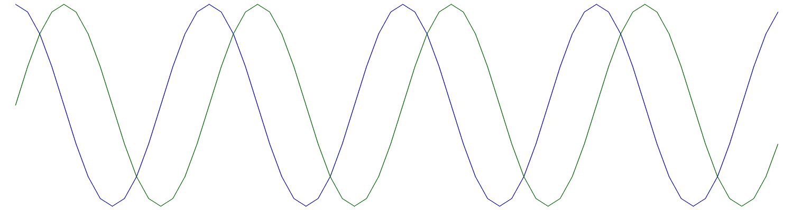

Transformée de Fourier

Ce module regroupe un ensemble de fonctions basées sur la Tranformée de Fourier Discrète (TFD).
#include "tsd/fourier.hpp"
Sous-groupes
Corrélation et délais temporels
Corrélation et délais temporels.
Estimation spectrale
Estimation spectrale.
Structures
struct FFTPlan
Classe abstraite pour un algorithme de calcul de FFT.
struct FiltreFFTConfig
Structure de configuration pour un filtre FFT (voir filtre_fft()).
Fonctions
sptr<FFTPlan> tfrplan_création(entier n=-1, bouléen avant=oui, bouléen normaliser=oui)
Création d'un plan de calcul FFT (pour calculer efficacement plusieurs FFT).
sptr<FiltreGen<float, cfloat>> rtfrplan_création(entier n=-1)
Création d'un plan de calcul FFT pour des signaux réels (pour calculer efficacement plusieurs FFT).
Veccf rfft(const Vecteur<T> &x)
TFD d'un vecteur réel.
Vecteur<T> rééchan_freq(const Vecteur<T> &x, float ratio)
Ré-échantillonage zéro phase à partir de la TFD.
auto fft(const Vecteur<T> &x)
Transformée de Fourier Discrète (TFD) rapide.
Vecf tfd_freqs(entier n, bouléen avec_shift=non)
Fréquences normalisées associées à chaque bin d'une TFD / FFT.
auto ifft(const Vecteur<T> &X)
Transformée de Fourier Discrète Inverse.
Vecteur<T> fftshift(const Vecteur<T> &X)
Décalage du spectre de manière à centrer les basses fréquences au milieu.
void csym_forçage(Vecteur<T> &X)
Modifie un vecteur de manière à ce qu'il soit conjugé symétrique.
tuple<sptr<Filtre<cfloat, cfloat, FiltreFFTConfig>>, entier> filtre_fft(const FiltreFFTConfig &config)
Création d'un filtre dans le domaine fréquentiel (technique OLA / OverLap-and-Add).
void ola_complexité(entier M, entier Ne, float &C, entier &Nf, entier &Nz)
Calcul de la complexité d'un filtre OLA, par échantillon d'entrée, en FLOPS.
void ola_complexité_optimise(entier M, float &C, entier &Nf, entier &Nz, entier &Ne)
Calcul des paramètres optimaux pour un filtre par OLA.
Veccf czt(const Veccf &x, entier m, cfloat W, cfloat z0=1.0f)
Transformée en z-chirp.